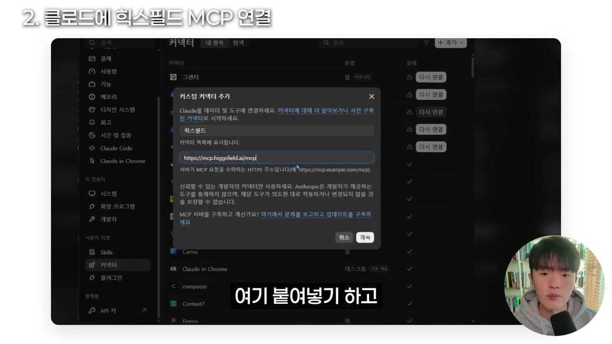
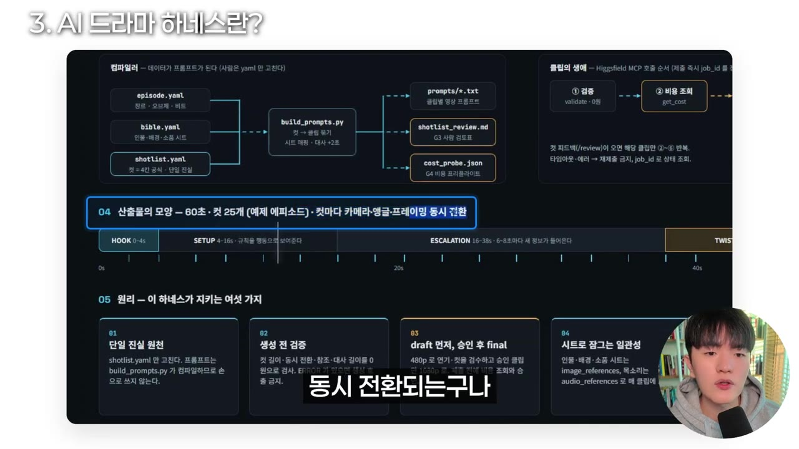
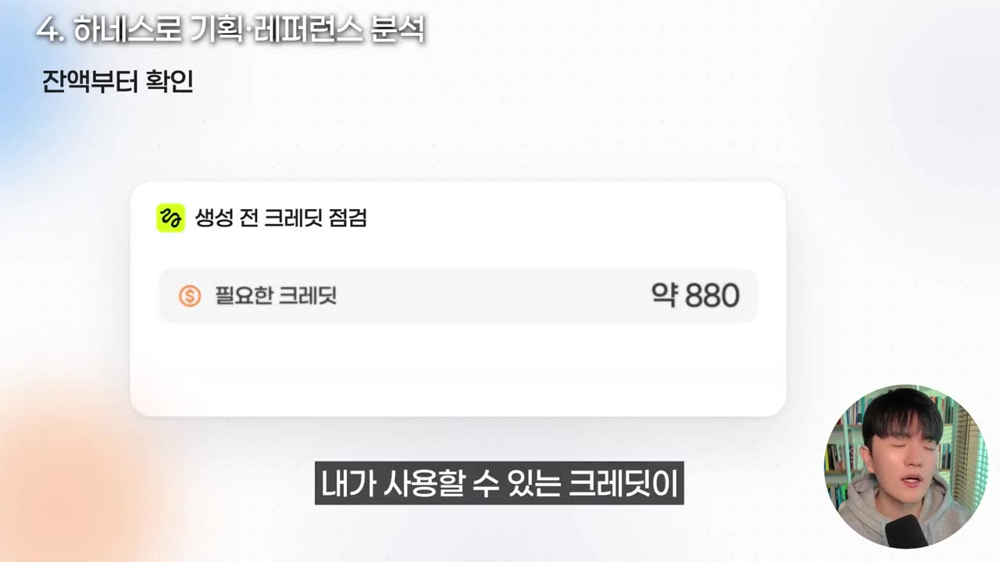
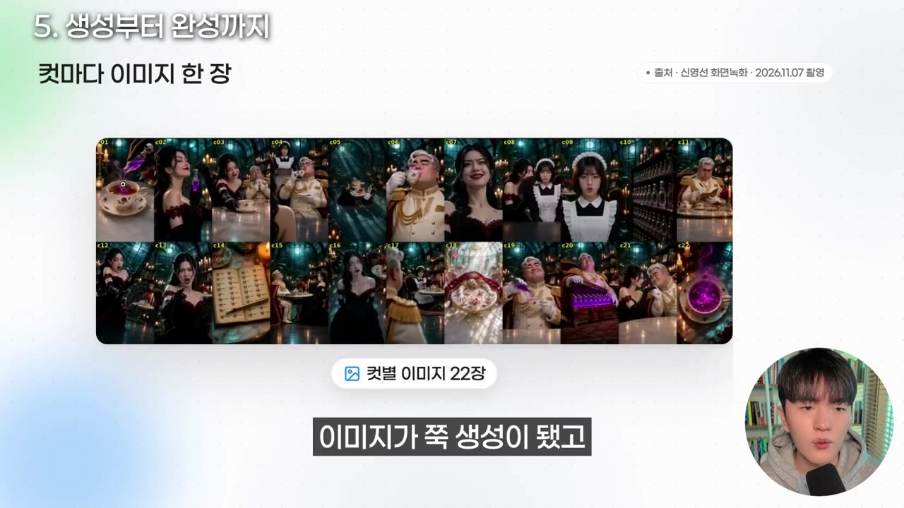
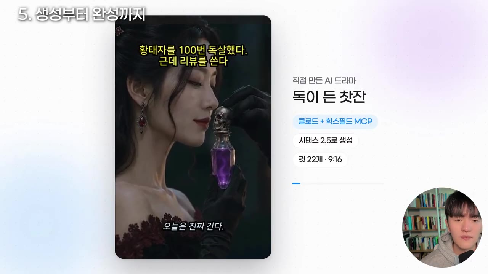

“자동화로 100만 조회수 AI 드라마 만들기” 힉스필드 MCP와 클로드로 AI 드라마 만드는 방법
▶ 원본 영상 보기한눈에 보기
- AI 드라마의 목적은 조회수 자체보다 영상에 나오는 AI 배우·인플루언서 캐릭터(IP)를 키워 광고와 수익을 다각화하는 것이다.
- 제작은 기획·시나리오 → 마스터 시트(캐릭터·배경·소품 이미지) → 샷 리스트·연출 → 영상 생성 순서로 하고, 클로드에 힉스필드 MCP를 연결하면 이 전 과정을 클로드가 직접 실행한다.
- 영상 제작자는 6개 채널의 성공 패턴과 레퍼런스 분석으로 만든 'AI 드라마 하네스'(클로드를 통제하는 폴더 시스템)로 병맛 로판 쇼츠를 뽑는다.
- 실제 테스트에서 50초 쇼츠 한 편의 생성 비용은 약 880~1,600 크레딧이었다. 첫 결과물은 레퍼런스보다 에너지가 약해서 하네스를 계속 깎아야 한다고 했다.
이런 분께 도움이 됩니다
- AI 드라마·쇼츠를 장면마다 프롬프트 복붙으로 만들던 분. 클로드와 MCP로 작업을 자동화하는 구조를 알 수 있다.
- 얼굴 없는 채널로 AI 콘텐츠 수익화를 노리는 분. 조회수보다 캐릭터 IP를 키우는 관점을 얻을 수 있다.
핵심 내용
수익 구조: 드라마가 아니라 AI 배우를 키운다
- 영화 팬이 특정 배우의 팬이 되듯, AI 드라마도 나오는 AI 인플루언서 캐릭터를 키우는 것이 장기 목표다. 드라마는 그 배우를 알리는 도구다. (1:29)
- 캐릭터에 서사가 쌓이고 팬덤이 강화되면 콘텐츠로 들어오는 트래픽과 배우를 보러 오는 트래픽이 생기고, 캐릭터 광고와 IP 다각화 수익이 가능해진다.
- 유튜브 조회수와 클립 입점만 보지 말고, 하나의 캐릭터 배우를 키운다는 쪽으로 사고를 넓히라고 한다.
💡 영상의 결론: 조회수는 수단이고, 키워야 할 자산은 캐릭터 IP다.
- 제작자의 실적 (자막 기준)
- AI 채널을 6개 운영한다.
- 그중 한 채널에서 유튜브 수익이 약 2만 정도 나왔다(단위는 자막상 불분명). 영상은 8개 정도 올라가 있다.
- 그 채널의 잘 나온 영상은 조회수 약 50만이다.
- 예시 채널의 병맛 로판 영상은 길이 2분 15초에 1개월 만에 조회수 62만이다.
제작의 큰 틀: 4가지 분류
- 기획·시나리오: 대본과 큰 맥락을 먼저 잡는다.
- 마스터 시트: AI 캐릭터·배경·소품을 이미지로 분류해 정리한다.
- 샷 리스트·연출: 카메라 앵글, 대사 콘티, 샷 목록을 정리한 뒤 영상 생성에 들어간다.
- 도구: 클로드와 힉스필드를 쓴다. 힉스필드는 영상 생성용 시스템 기능이 잘 갖춰져 있고 여러 AI 모델을 골라 쓸 수 있다는 점이 장점이다. (3:15)
클로드에 힉스필드 MCP 연결
- MCP는 사용자가 복사·붙여넣기를 하지 않아도 클로드가 힉스필드를 오가며 직접 작업하게 하는 연결 통로다.
- 연결 방법은 아래 '따라 해보기'에 정리했다.
- 커넥터 열기
- 커스텀 커넥터
- 이름 입력
- URL 복사
- 붙여넣기
- 1커넥터 열기
클로드 설정에서 커넥터 메뉴로 들어간다. (3:47)
- 2커스텀 커넥터
추가를 누르고 커스텀 커넥터를 선택한다.
- 3이름 입력
이름 칸에 '힉스필드'를 입력한다. 아래에 MCP 서버 URL 칸이 있다.
- 4URL 복사
힉스필드 웹사이트의 MCP 메뉴에서 클로드 연결하기 → 앱에서 연결하기를 누르고 'MCP 링크 복사하기'를 누른다.
- 5붙여넣기
복사한 링크를 URL 칸에 붙여 넣고 계속 버튼을 누르면 연결된다.

AI 드라마 하네스
- 하네스 엔지니어링은 말의 마구처럼 AI가 원하는 콘텐츠를 만들도록 통제하는 폴더 시스템이다. 제작자의 6개 채널 성공 공식, 패턴, 레퍼런스 분석에 팀 방식을 더해 만들었다. (4:49)
- 이 하네스를 클로드에 연결하면 레퍼런스 분석, 컷별 캡처, 프롬프트 추출, 재생성 같은 반복 작업이 크게 줄어든다.
- AI로 만든 영상을 분석할 때는 유튜브 연동이 잘 되는 제미나이를 쓴다. 링크를 넣고 내용·개념·스크립트를 뽑아 하네스 설계에 활용했다.
- 폴더 구성
CLAUDE.md는 자동으로 지침이 된다.README는 설명서다. 폴더를 클로드로 열고, 힉스필드 공식 MCP에 로그인해 연결하며, 비공식 MCP는 쓰지 않는다고 적혀 있다. (6:01)
- 역할 분담
- 사람은 시나리오 1·2안 선택, 마스터 시트 승인, 대사 검토, 자료 요청, 결정을 맡는다.
- 클로드는 오케스트레이터(전체 조율)로,
CLAUDE.md의 절대 원칙과 피드백 규칙대로 움직인다. - 에이전트는 4개다: 디렉터, 프롬프트 엔지니어, 컷 QA, 리텐션.
- 클로드가 로컬 스크립트에 컴파일·검증을 요청하고, 힉스필드는 영상 모델(Seedance 계열이나 클링 등, 자막상 불분명)을 실행한다.
- 산출물 예시: 60초짜리 영상이면 컷 25개가 들어가고, 컷마다 카메라 앵글·프레이밍·장면 전환이 정의된다. (7:36)
- 브리프
- 바이블
- 마스터 시트
- 샷 리스트
- 드래프트
- 피드백
- 파이널·레이어드 조립
- 점검
- 1브리프
기획 요약을 완성한다.
- 2바이블
작품 설정을 정리한다.
- 3마스터 시트
캐릭터·배경·소품 이미지를 만든다.
- 4샷 리스트
컷별 앵글·대사·연출을 정리한다.
- 5드래프트
시험 초안을 생성한다.
- 6피드백
사람이 검토하고 수정을 지시한다.
- 7파이널·레이어드 조립
최종본을 생성하고 편집한다. (자막상 '레이드 조립', 불분명)
- 8점검
최종 확인 후 영상이 완성된다.

- 하네스 폴더는 영상 설명의 약속대로, 댓글이 30개 정도 넘으면 고정 댓글에 다운로드 링크를 남긴다고 했다.
실제 제작 과정 시연
- 시작 방법 두 가지
- 하네스 폴더 자체를 작업 폴더로 지정한다. 새 환경 → 로컬에서 폴더 추가 → 드라마 하네스 폴더를 선택한다.
- 제작자는
.md파일 경로를 클로드에게 주고 "이 파일 확인해 봐"라고 요청하는 방식을 썼다. (8:21)
- 기획: "AI 드라마 50초짜리 쇼츠, 로맨스 판타지"를 요청하자 하네스 구조에 맞춰 5개 안이 나왔다. 클로드는 첫 장면의 시선 끌기가 가장 센 '독이 든 찻잔' 안을 추천했다.
- 모델 확인: 클로드가 모델 사양을 직접 조회해 "C 2.5가 맞다"고 답했다. 인물 일관성, 목소리 고정, 크레딧 절약이 이유다(모델명은 자막상 불분명).
- 레퍼런스 분석
- 앞서 본 2분짜리 영상을 첨부하자 병맛 코미디 로판으로 분석했고, 추천안과는 정반대 톤이라고 짚었다.
- 초 단위로 어떤 컷과 대사가 들어갔는지 뽑고, 1분 쇼츠에 맞는 구성도 정리해 줬다. (9:31)
- 비용 확인: 생성 전에 클로드가 비용 조회 여부를 물었고, 제작자가 먼저 비용을 확인했다.
| 화질 | 이번 편 총 크레딧 |
|---|---|
| 고화질 | 약 1,600 |
| 720p | 약 880 |

- 마스터 시트: 캐릭터·배경·소품(찻잔, 독까지)을 이미지로 먼저 만들었다. 감독 입장에서 "코미디 역할은 더 못생기거나 뚱뚱한 개성 있는 캐릭터"로 지시하고, B안 21번을 골랐다. (10:25)
- 생성과 개선
- 테스트를 3번 했고, 원하는 영상이 안 나와서 시간이 오래 걸렸다. 영상 자체는 금방 나온다.
- 컴퓨터를 계속 붙잡고 있으면 2~3시간이면 만들 수 있다고 한다.
- 첫 결과를 레퍼런스와 비교하니 컷 전환과 줌 같은 요소가 덜 살았다. 클로드는 컷 수는 레퍼런스 수준인데 영상의 에너지가 빠졌고, 원인 4가지 중 2가지는 하네스의 빈틈이라고 진단했다.
- 해결책은 편집 보강, 짧은 컷 추가 생성, 하네스 수정이다. 먼저 편집 보강을 했고, 중간에 "대본을 더 잦아들게, 레퍼런스처럼 재밌게" 같은 디렉팅을 계속 줬다.

- 결과물: 독살 시도를 매번 하는 병맛 코미디가 완성됐다. 독 별점 4.5, 구독자 10만 같은 대사로 웃음을 만든다.

하네스 운영 팁과 확장
- 처음부터 완벽한 하네스는 없다. 여러 번 테스트하며 깎아야 파일·폴더 구조가 안정되고, 그 뒤부터 일관된 품질로 나만의 제작 방식이 재현된다. (13:20)
- 영화 같은 고감도 영상을 원하면 컷 전환, 카메라 앵글, 줌인아웃 같은 디테일을 모두 하네스에 넣어야 한다.
- 마이크(음성) 입력으로 "이건 빼고 이 부분은 더 웃기게"처럼 지시하면 힉스필드 웹에서 직접 생성·대기하는 것보다 편하다.
- 클로드에서 영상 작업을 할 때는 Opus 5.5 모델에 에포트(노력 수준)를 중간~높음으로 쓰길 추천한다(모델명은 자막상 '오프스 5.5'). (14:07)
- 로판, 정통 로맨스, 일상 드라마 등 템플릿 포맷별로 하네스를 만들어 두면 이후 제작이 쉬워진다. 영상 설명에 따르면 힉스필드 MCP는 OpenClaw와 Hermes에서도 쓸 수 있다.
💡 처음에는 영상보다 나만의 시스템(하네스)을 잘 만드는 것이 먼저다.
따라 해보기
준비물
- 클로드 데스크탑 앱과 커넥터 기능을 쓸 수 있는 계정. 요금제 조건은 영상에 안 나옴.
- 힉스필드 계정과 크레딧. 50초 쇼츠 한 편에 약 880~1,600 크레딧이 들었다(요금제·가격은 영상에 안 나옴).
- 제미나이: 레퍼런스 영상 분석용(선택).
- AI 드라마 하네스 폴더: 제작자가 댓글이 일정 수(약 30개)를 넘으면 고정 댓글로 공유하겠다고 했다. 직접 만들 수도 있다.
- 소요 시간: 본격 제작은 2~3시간 이상 걸릴 수 있다.
단계별 방법
- MCP 연결
- 하네스 열기
- 기획안 받기
- 레퍼런스 분석
- 비용 확인
- 마스터 시트 승인
- 초안 생성·디렉팅
- 하네스 개선
- 1MCP 연결
클로드 커넥터에 힉스필드 MCP URL을 붙여 넣는다.
- 2하네스 열기
하네스 폴더를 작업 폴더로 지정하거나
.md경로를 알려 준다. (8:21) - 3기획안 받기
"AI 드라마 50초 쇼츠, 로맨스 판타지"처럼 요청하고 5개 안 중 하나를 고른다.
- 4레퍼런스 분석
만들고 싶은 영상을 첨부해 분석시키고, 내 영상 길이에 맞게 구성을 조정한다.
- 5비용 확인
화질별 크레딧을 먼저 조회하고 잔액을 비교한다. (9:56)
- 6마스터 시트 승인
캐릭터·배경·소품 이미지를 만들게 하고, 마음에 드는 안을 고른다.
- 7초안 생성·디렉팅
컷별로 생성하고 컷 전환, 대본, 톤을 지시하며 반복한다.
- 8하네스 개선
레퍼런스와 비교해 빈틈을 하네스에 반영한다.
따라 할 수 있는지 점검
- ✅ 바로 따라 할 수 있음: 1단계(MCP 연결 메뉴와 순서), 3~7단계의 진행 방식과 지시 예시.
- ⚠️ 2단계 「하네스 열기」: 하네스 폴더 원본이 영상에 공개되지 않았다. → 고정 댓글 링크 확인(조건: 댓글 수), 또는
CLAUDE.md·README·4개 에이전트·8단계 파이프라인 구조를 보고 직접 구성한다(보충). - ⚠️ 1단계 「MCP 연결」: 클로드 요금제와 커넥터 사용 가능 조건, 힉스필드 가입·결제 필요 여부가 안 나왔다. → 힉스필드 사이트와 영상 설명란 링크에서 확인.
- ⚠️ 5단계 「비용 확인」: 크레딧 가격, 구독 플랜, 사용할 모델 이름(C 2.5)이 자막상 불분명하다. → 영상 9:06 화면과 힉스필드 모델 목록 확인.
- ⚠️ 7~8단계: 4가지 원인 중 하네스 빈틈 2가지와 구체적 수정 내용이 상세하게 안 나왔다. → 영상 11:26 화면 확인.
- ❓ 영상 앞부분에서는 '영상 모델 선택 폭'을 장점으로 말하지만, 시연에서는 한 모델만 확인했다. 어떤 모델이 최적인지는 직접 비교가 필요하다.
- ❓ 유튜브 수익 '2만'의 단위(원, 달러, 만원 등)가 불분명하다.
확인 방법
- 클로드 커넥터 목록에 힉스필드가 표시되고, 클로드에게 사양 조회나 비용 조회를 시켰을 때 힉스필드에서 실제 값을 가져오면 연결된 것이다.
- 마스터 시트 이미지가 클로드 대화창에 생성되어 나오면 정상이다.
막히면
- 원하는 영상이 안 나오면 시간이 오래 걸린다. 영상은 빨리 나오지만 원하는 결과를 얻는 데 반복이 필요하다.
- 첫 결과의 에너지가 약하면 편집 보강 → 짧은 컷 추가 → 하네스 수정 순으로 대응한다.
- 비공식 MCP는 쓰지 않고 공식 MCP만 연결한다.
기억할 숫자·인용
- 예시 영상: 2분 15초, 1개월 만에 조회수 62만.
- 제작자는 채널 6개 운영, 영상 8개 채널 기준 최고 조회수 약 50만.
- 60초 영상 기준 컷 25개, 파이프라인 8단계, 에이전트 4개.
- 비용: 고화질 약 1,600 크레딧 / 720p 약 880 크레딧.
- 인상 깊은 말: "하네스는 최대한 깎고 깎인 형태의 프로젝트 폴더 구조 시스템이다."
생각해볼 점
- 영상 속 수익·조회수 수치는 제작자 본인 주장이며 검증할 수 없다. 유료 강의처럼 하네스를 홍보하는 성격도 있다.
- 시연 결과물은 제작자도 "더 다듬을 수 있다"고 인정한 초안 수준이다. 하네스만으로 품질이 보장되지는 않는다.
- 레퍼런스 영상을 분석해 비슷한 구조로 만드는 방식은 원작 저작권·유사성 문제가 생길 수 있다. 채널 운영 전에 확인이 필요하다.
바로 해볼 일
- 클로드 설정 → 커넥터에서 힉스필드 MCP를 연결해 본다.
- 만들고 싶은 장르의 레퍼런스 영상 1개를 제미나이로 분석해 컷 구성과 대본을 뽑아 본다.
- 폴더 구조(
CLAUDE.md, 4개 에이전트, 8단계)를 참고해 나만의 하네스 초안을 만들어 본다.